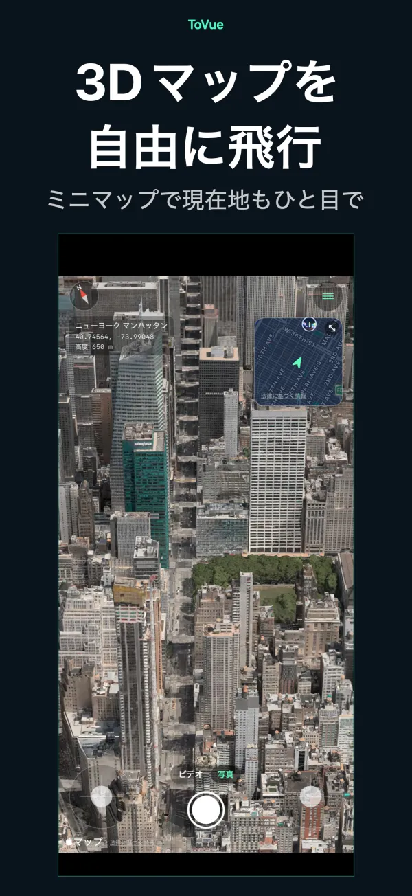
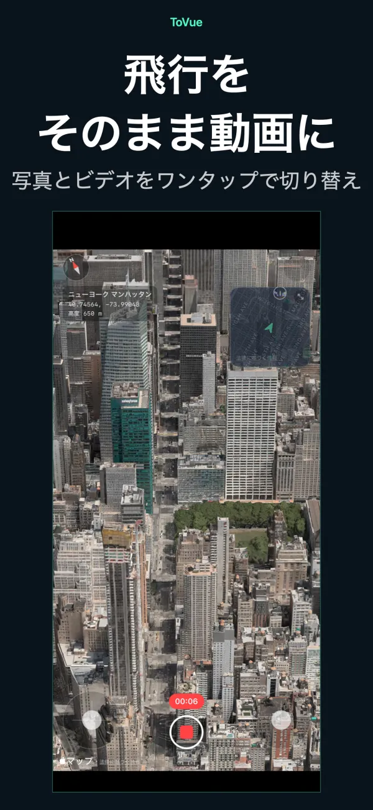
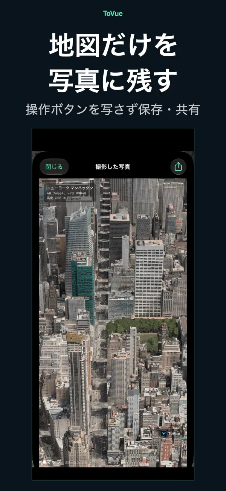
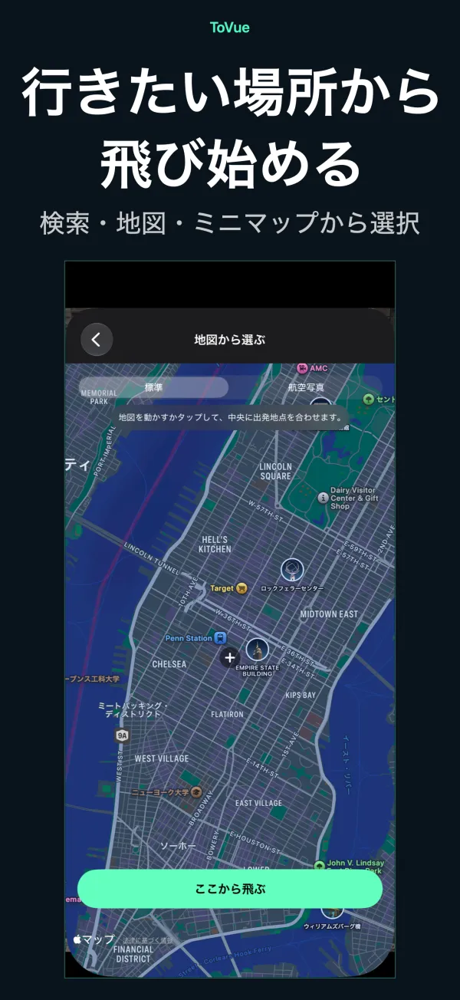
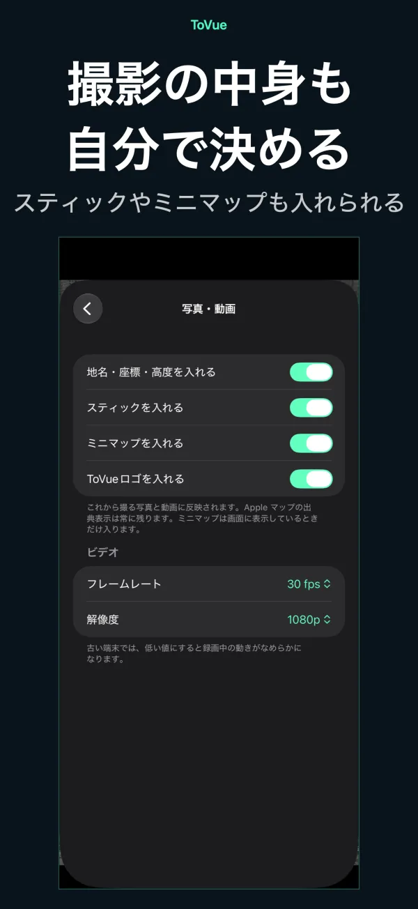

3Dマップを、
ドローンのように飛ぼう。
iPhone・iPadで、世界の街を空から自由に飛行。
景色は写真でも動画でも、
 無料・登録不要・位置情報の許可不要
無料・登録不要・位置情報の許可不要できること
スティックで飛んで、好きな景色をそのまま残す。
自由に飛行
2本のスティックで上昇・旋回・前進。片手モードなら指1本で操作できます。
ミニマップ
画面右上で現在地と進行方向をひと目で。タップすると地図から行き先を選べます。
動画を録画
カメラアプリのように写真とビデオを切り替え。飛行をそのまま動画に残せます。
地図だけの写真
操作ボタンを写さずに撮影。地名・座標・高度を入れることもできます。
どこへでもワープ
検索や地図から場所を選んで、すぐにその上空から飛び始められます。
11言語に対応
日本語・英語・中国語・韓国語など11言語。iPhoneとiPadに対応しています。
スクリーンショット





料金
基本機能はすべて無料。広告が気になる方は買い切りで。
基本機能
無料
- すべての飛行・撮影・録画機能
- バナー広告と、移動後の全画面広告
- 写真と動画にToVueロゴ
広告とToVueロゴを削除
¥480
- 1回限りの買い切り（サブスクではありません）
- すべての広告を非表示
- 写真と動画のToVueロゴを外せる
ご利用にあたって
- ToVueは仮想の地図ビューアです。実際のドローンの操縦や、ナビゲーション・飛行計画には使えません。
- 3Dの建物や地形はApple マップのデータによるもので、地域によって詳細度が異なります。
- インターネット接続が必要です。GPSは使わず、位置情報の許可も求めません。
- 写真と動画には、Apple マップの出典表示が常に残ります。
空からの景色を、いま撮りに行こう。
無料・登録不要・位置情報の許可不要